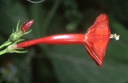
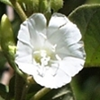
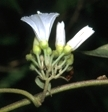
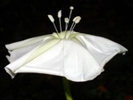
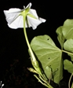

Plants of Monteverde, Costa Rica
|
 |
William A. Haber
|
|
Annotated Checklist of Monteverde Morning Glories |
| This is a list of species recorded from the Cordillera de Tilarán near Monteverde, defined as the area from the higher peaks (1600-1800 m) down to about 700 m elevation on both the Pacific slope. The scientific names follow the Tropicos database of the Missouri Botanical Garden (http://mobot.mobot.org/W3T/Search/vast.html). |
| Scientific name | Description and status | Flower, top view | Flower, side view |
| Convolvulus nodiflorus | Corolla small, <3 cm diameter, no nectar tube, style forked, calyx lobes short and rounded, hairy, flowers open in daytime, no odor; 800-1300 m; common. |  |  |
| Ipomoea alba | Corolla large, >5 cm diameter, tube narrow and about 12 cm long, open at night, sweet odor; below 700 m; rare. |  |  |
| Text and images copyright William A. Haber, http://efg.cs.umb.edu/ |
| Ceated: 15 June 2006. Updated: 16 June 2006. |